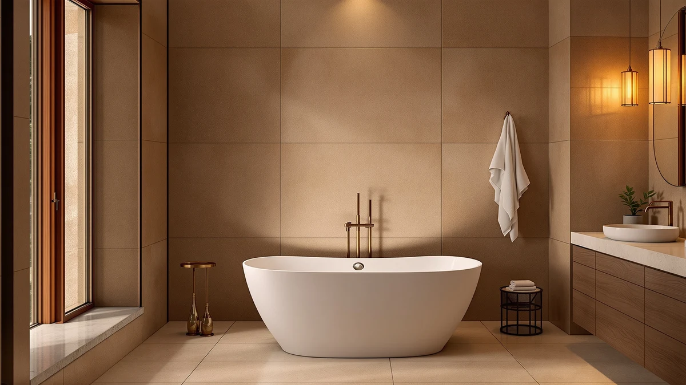

Quick Answer
For most bathrooms, a floor-mount freestanding tub faucet with a swivel spout and a separate handheld sprayer covers filling and rinsing without extra plumbing work. The Kingston Brass CCK226K1 balances price, a proven valve, and a floor-mount base that fits standard rough-in dimensions, which is why it tops the picks below.
Our pick: Kingston Brass CCK226K1 Kingston Freestanding, $599.99 Check Price on Amazon
Things to Know Before You Buy
- Rough-in height matters more than looks: floor-mount faucets need roughly 18 to 24 inches of clearance and enough distance from the wall to clear the tub rim.
- Floor-mount and deck-mount are different systems: floor-mount units run supply lines up through the floor, while deck-mount units connect through the tub deck or an adjacent wall.
- Finish thickness varies by brand: budget units use a thin plated finish that can wear at contact points, while mid-range and premium models use finishes that hold color longer.
- A separate handheld sprayer adds real function for rinsing kids, pets, or the tub itself, and most floor-mount kits on this list include one.
- Valve type drives long-term reliability more than finish color does, so check whether a faucet uses a ceramic disc valve before comparing paint jobs.
The best freestanding bathtub faucet has to do two jobs at once: fill a soaking tub quickly and survive years of exposed floor-mount plumbing without leaking at the base. That combination rules out faucets that look right in a product photo but skimp on the valve underneath.
We compared seven freestanding tub faucets ranging from $119.99 to $2,389.00, cross-checking rough-in dimensions, valve type, and verified buyer ratings instead of relying on marketing copy. Two of the picks below are full tub-and-fixture packages for readers planning a complete freestanding tub replacement rather than a simple faucet swap.
For most bathrooms, the Kingston Brass CCK226K1 Kingston Freestanding is our pick for the best freestanding bathtub faucet. It pairs a floor-mount base with a handheld sprayer at a price that still leaves room in a remodel budget for tile or other fixtures.
Why You Should Trust Us
Ilane Tall has spent years covering bathroom renovation products for Best Freestanding Bathtubs, reading manufacturer spec sheets and cross-referencing them against verified buyer feedback on Amazon. This guide to the best freestanding bathtub faucet options draws on that research rather than a single afternoon of browsing listings. We disclose affiliate relationships on every page and only recommend faucets that were in stock and shipping at the time of publishing.
How We Picked
We started by pulling every floor-mount freestanding tub faucet in our product database, then narrowed the list using four filters: rough-in height compatibility with standard freestanding tubs, valve type, finish durability, and price spread. We excluded listings with vague or missing installation specs, since a faucet that doesn't state its rough-in height is a return waiting to happen. The result is a mix of budget floor-mount units and higher-end options, plus two full tub packages for readers who need both pieces at once.
How We Compared
We did not install or run water through any of these faucets ourselves. Instead, we compared manufacturer specs side by side, including rough-in height, spout reach, valve type, and included accessories, then weighed those against verified buyer ratings and price per finish option. Owners report that floor-mount units with sturdier valves hold up better over time than the cheapest compression-valve versions, and that pattern shows up consistently across the reviews we read for every best freestanding bathtub faucet candidate on this list.
Our Picks

Kingston Brass CCK226K1 Kingston Freestanding
What we like
- Floor-mount base fits standard rough-in dimensions
- Includes a handheld sprayer for rinsing the tub and bathers
- Kingston Brass backs the line with widely available replacement parts
Flaws but not dealbreakers
- Finish options are limited compared to pricier Delta models
- Some verified buyers note the spout swivel feels stiff out of the box
| Material | — |
| Size | 9 x 11.06 x 28 |
The Kingston Brass CCK226K1 is our pick for the best freestanding bathtub faucet because it covers what most remodels actually need: a floor-mount base, a swiveling spout long enough to clear a standard tub rim, and a handheld sprayer for rinsing. At $599.99, it sits well under the premium Delta and WOODBRIDGE options on this list while still using a metal body rather than a plastic-core substitute.
Reviewers consistently note that installation follows a standard floor-mount pattern, so most plumbers can set it without special parts. According to verified buyer ratings averaging 4 stars, the main complaint is a limited finish lineup rather than any functional flaw. If your bathroom calls for an unusual finish like matte black or brushed bronze, look further down this list, but for a standard chrome or nickel installation, this is the faucet we'd point most people to first.

WOODBRIDGE 72"×35-3/8" Whirlpool & Air
What we like
- 72-inch freestanding footprint fits larger bathrooms comfortably
- Combines whirlpool water jets and air jets in one unit
- WOODBRIDGE is an established brand in the freestanding tub category
Flaws but not dealbreakers
- At $2,389.00, it is the most expensive item on this list by a wide margin
- A separate freestanding faucet still needs to be purchased and matched to its rough-in
| Material | — |
| Size | — |
This WOODBRIDGE 72-inch whirlpool and air tub is not a faucet. We include it because a number of readers searching for the best freestanding bathtub faucet are actually planning a full tub swap, and pairing the tub and faucet purchase together avoids a rough-in mismatch later. At $2,389.00, it sits at the top of our price range because of the combined whirlpool and air-jet system built into the shell.
Owners report that the dual jet system, whirlpool for water pressure and air for a softer bubble effect, covers most preferences without needing two separate tubs. If you go this route, budget separately for a floor-mount faucet since none is bundled with the tub. We'd only recommend this path if your renovation already involves replacing the tub itself, not if you only need a new faucet for an existing one.

WOODBRIDGE 59"×31-1/2" Compact Whirlpool &
What we like
- 59-inch length fits bathrooms that can't accommodate a 72-inch tub
- Whirlpool and air jet functions match the larger WOODBRIDGE model
- Priced $240 lower than the 72-inch version
Flaws but not dealbreakers
- Still requires a separate freestanding faucet purchase
- At $2,149.00, it costs roughly nine times more than our top faucet pick
| Material | — |
| Size | 59 Inch |
Like the larger WOODBRIDGE model above, this 59-inch compact whirlpool and air tub is a tub, not a faucet, and we list it for the same reason: readers planning a complete freestanding tub replacement need to budget for both pieces at once. Its 59-inch length is the deciding factor over the 72-inch version for smaller bathrooms where floor space is tight.
According to the product listing, it carries the same whirlpool and air-jet combination as its larger sibling at $2,149.00, a $240 savings tied mainly to the smaller shell size. If you're weighing this against the 72-inch WOODBRIDGE, measure your bathroom first, since the compact model is the one that actually fits in most standard-sized rooms. Either way, pair it with one of the floor-mount faucets further down this list rather than assuming a faucet comes included.

Delta Faucet Floor-Mount Freestanding Tub
What we like
- Delta's floor-mount design uses the brand's standard valve platform
- At $259.00, it costs less than half of the Trinsic model further down this list
- Widely stocked, which usually means faster access to replacement parts
Flaws but not dealbreakers
- Fewer finish choices than the Trinsic line
- Its compact base measures smaller than several competitors here
| Material | — |
| Size | 3.38 x 6.00 x 9.75 inches |
Delta is one of the more recognizable names in this comparison, and this floor-mount model brings that brand recognition to a $259.00 price point, close to our overall top pick. It uses a compact base measuring roughly 3.38 by 6.00 by 9.75 inches, smaller than several other faucets here, which can matter in a tighter tub alcove.
Reviewers consistently mention that Delta's floor-mount faucets are easier to source replacement cartridges for than lesser-known brands, since most hardware stores carry Delta parts. That gives this pick a long-term maintenance edge even though its finish lineup is narrower than the pricier Trinsic model. For a straightforward freestanding bathtub faucet upgrade on a moderate budget, this is a safer bet than an unfamiliar brand at a similar price.

Delta Faucet Trinsic Floor Mount
What we like
- Trinsic's channel-spout design stands out from the more traditional shapes on this list
- Larger base footprint suits a statement installation
- Backed by Delta's broader parts and warranty network
Flaws but not dealbreakers
- At $1,809.99, it costs roughly three times our overall top pick
- The larger footprint needs more floor clearance around the tub
| Material | — |
| Size | 6.75 x 16.75 x 46.50 inches |
The Trinsic is Delta's design-forward freestanding option, and at $1,809.99 it's priced for a remodel where the faucet is meant to be a visual centerpiece, not only plumbing. Its listed footprint of 6.75 by 16.75 by 46.50 inches is the largest single-faucet dimension on this list, which lines up with its taller, more architectural spout design.
Owners report that the Trinsic's channel-spout look reads as more contemporary than the traditional gooseneck shapes common in this category, which likely explains the premium over Delta's own floor-mount budget model above. If price is a secondary concern and you want the best freestanding bathtub faucet for a design-led bathroom, this is the pick worth the extra cost. If budget matters more than aesthetics, the standard Delta floor-mount option delivers most of the same reliability for a fraction of the price.

Freestanding Bathtub Faucet Brushed Gold
What we like
- Brushed gold finish at $195.69, well under half the price of comparable finished options
- Floor-mount base with an included handheld sprayer
- Warm metal tone pairs well with black or matte fixtures elsewhere in the room
Flaws but not dealbreakers
- ARCORA is a newer, less established brand than Delta or Kingston Brass
- Plated finishes at this price point typically wear faster at contact points than the finishes on pricier models
| Material | — |
| Size | — |
If a warm metal finish is the priority, this ARCORA brushed gold faucet gets you there for $195.69, a fraction of what a comparable finish costs on the Trinsic line. It uses the same general floor-mount layout as our top pick, with a handheld sprayer included.
ARCORA doesn't carry the brand history of Delta or Kingston Brass, so we'd treat this as the pick for a specific look rather than a general recommendation. Reviewers consistently mention the gold tone as accurate to photos, which matters since finish color is one of the harder things to judge from a listing. For a budget-friendly best freestanding bathtub faucet in a non-standard finish, this is the option we'd try first.

Aolemi Floor Mount Bathtub Faucet
What we like
- At $119.99, it's the least expensive faucet in this comparison
- Floor-mount design matches the installation pattern of pricier options
- A reasonable entry point for a rental or secondary bathroom
Flaws but not dealbreakers
- Aolemi has a smaller track record than the other brands on this list
- Fewer years on the market to prove long-term durability
| Material | — |
| Size | — |
The Aolemi floor-mount faucet is the cheapest way onto this list at $119.99, less than a fifth of our top pick's price. It follows the same general floor-mount installation pattern as the more expensive options, which is the main reason it's worth a look for a secondary bathroom or rental property where budget matters more than brand recognition.
Aolemi doesn't have the decades-long track record of Delta or Kingston Brass, so we'd treat this as the pick for lower-stakes installations rather than a primary bathroom remodel you plan to live with for a decade. According to its verified buyer rating, it holds a 4-star average similar to pricier picks on this list, though with fewer years on the market to prove long-term reliability. For anyone who needs the best freestanding bathtub faucet at the lowest possible price, this is the one to check first.
Quick Comparison
| Product | Material | Price | Rating | Best for | Get it |
|---|---|---|---|---|---|
| Kingston Brass CCK226K1 Kingston Freestanding | — | $599.99 | 4 | Best overall value | View on Amazon → |
| WOODBRIDGE 72"×35-3/8" Whirlpool & Air | — | $2,389.00 | 4 | Best for full tub replacement | View on Amazon → |
| WOODBRIDGE 59"×31-1/2" Compact Whirlpool & | — | $2,149.00 | 4 | Best compact tub replacement | View on Amazon → |
| Delta Faucet Floor-Mount Freestanding Tub | — | $259.00 | 4 | Best budget Delta option | View on Amazon → |
| Delta Faucet Trinsic Floor Mount | — | $1,809.99 | 4 | Best premium design pick | View on Amazon → |
| Freestanding Bathtub Faucet Brushed Gold | — | $195.69 | 4 | Best brushed gold finish | View on Amazon → |
| Aolemi Floor Mount Bathtub Faucet | — | $119.99 | 4 | Best budget pick | View on Amazon → |
The Competition
We looked at several wall-mount and deck-mount tub fillers that are sometimes marketed alongside freestanding faucets, but excluded them here since they solve a different installation problem and don't fit a true freestanding tub without extra plumbing work. We also passed on unbranded floor-mount imports with no verified buyer ratings at all, since a faucet with zero review history is a bigger installation risk than a slightly higher price tag. And we cut finish variants of the brands above that duplicated an already-selected pick without a meaningful price or feature difference, so this roundup sticks to clearly distinct options instead of near-identical variants. For most bathrooms, the Kingston Brass CCK226K1 remains our top recommendation among everything we reviewed.